Arnside and Silverdale Tourist Information
| The two villages of Arnside and Silverdale stand a couple of miles apart on a coastline overlooking the Kent Estuary and Morecambe Bay. This is an area designated as one of Outstanding Natural Beauty where an abundance of flora and fauna thrives undisturbed and protected in landscapes of woodlands, meadows, limestone ridges and coastline. It's a destination for coastal and countryside walks, cycle rides, wildlife habitat, nature trails, picnic areas and sunset watching. | |
Arnside |
Silverdale |
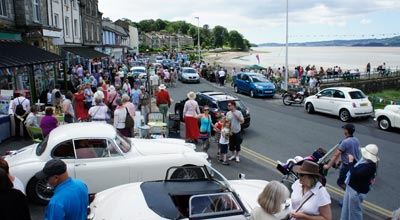 |
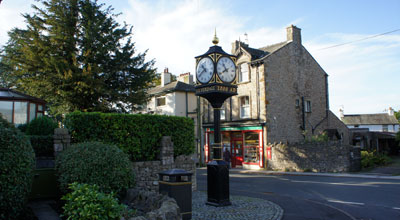 |
|
Silverdale is separated from Arnside by a five minute train journey and three miles of narrow winding country road. Alternatively there are the options of an hours shoreline walk or the longer route via Arnside Knott both of which provide great views across Morecambe Bay. Like its neighbour, Silverdale is not a beach resort. It's a location from where to begin exploring on foot or bicycle the places of historical and wildlife interest in an area renowned for the beauty of unspoiled countryside. Silverdale has a general store, a family butcher, a post office, a library, a restaurant, café, cycle hire, a Cof E Church and Methodist Chapel. |
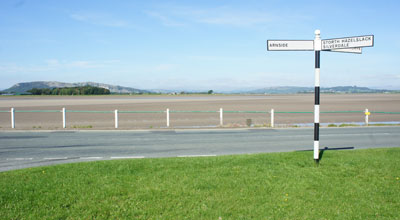 |
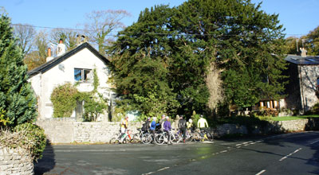 |
Arnside and Silverdale Shops and Amenities |
|
| Silverdale Post Office Postal services, stationery, newspapers, magazines, small gifts and dry cleaning drop-off point. Opening Times Monday, and Wednesday to Friday: 9am – 1pm and 2pm – 5.30pm Tuesday: 9am – 1pm Saturday: 9am – 12.30pm. Sunday closed |
|
| Rowlands Pharmacy 38, The Promenade. Arnside Opening Times: Monday to Friday - 9am – 5.30pm Saturday - 9am – 1pm Sunday - Closed. |
Silverdale Pharmacy 18 Emesgate, Silverdale Opening Times: Monday, and Wednesday to Friday - 9am – 1pm and 2pm – 5pm Tuesday and Saturday - 9am – 1pm Sunday - Closed. www.silverdalepharmacy.com |
| Arnside Post Office Arnside post office is located in the Londis Convenience Store next to the Heron Cafe. A full range of postal services are available seven days a week from 7am until 8pm. |
Co-Op Store Foodstuff, confectionery, wines, beers and spirits. Open seven days a week from 8am until10pm. 12, Emesgate Lane. Silverdale. Phone: 01524 701339. |
| Avery's Convenience Store & Off Licence Open from 8am until 8pm seven days a week. Groceries, fruit, vegetables, confectionery, beers, wine, spirits, cash machine and National Lottery Point. 51, Silverdale Road, Arnside. Phone: 01524 762052. |
Butchers Burrow F & W & Son Locally sourced meat and speciality Cumberland Sausages. Open Monday to Friday from 7.30am till 4.45pm. Saturdays from 7.30am till 12.45pm. 22, Emesgate. Silverdale. Phone 01524 701209. |
| Computer Repairs Repairs, services, computer components plus guidance and advice in plain English. Bank House, The Promenade, Arnside, Cumbria LA5 0HA www.parksidecomputers.com |
Silverdale Village Pantry |
Garage Services |
Ladies and Gents Hairdressers |
Phil Fallows Hair & Beauty |
|
Car parking There are two more a mile outside Arnside on the B5282 in the direction of Sandside and Milnthorpe. Both provide immediate access to a path alongside the estuary from where it's a scenic level walk to Arnside railway station and the village. Car parking in Silverdale village is very limited especially during the high season. However, half a mile from the village centre there's shoreline parking at the bottom of Shore Road plus a few spaces on the approach leading to the shore. The cost for parking on the shoreline is a more than reasonable £1 (paid in to the Honesty Box on site) About a dozen more spaces are in the Eaves Wood National Trust car park a mile from the village. Both of these parking areas are ideal starting points for either countryside or shoreline walks. Please be aware that roads leading to Silverdale are narrow and winding and so there is little comfortable space for parking on the verges. |
Silverdale Public Telephone Box Petrol Station Public Toilets |
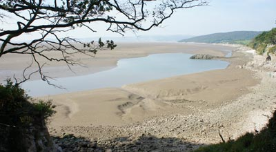 |
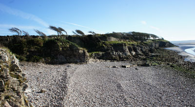 |
Arnside and Silverdale Road, Rail and Taxi Services |
|
Arnside Rail Bus Service Bela Cars |
SilverdaleRail Bus Service Bus Services from Village Centre Cycle Hire |
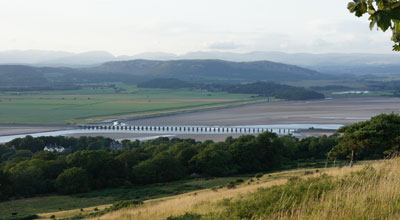 |
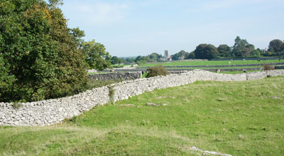 |
Arnside and Silverdale Attractions |
|
| Flora and Fauna Arnside is within a protected area covering Morecambe Bay, the Lune Estuary and the Kent Estuary. This is an area of great importance for the wintering and passage of wildfowl and waders and as a breeding ground for wildfowl, gulls and terns. |
Jenny Browns Point The Point, not far from Silverdale is one of the best places for superb views across Morecambe Bay. It is said to have been named after a woman who when working as a nanny in the 18th C drowned rescuing the children in her care from a fast rising tide. Large flocks of wading birds to be seen during the winter months. |
| Arnside Bore The Arnside Bore occurs around once per month. It's a tidal phenomenon caused by a high tide entering the narrow channel of the Kent Estuary which can create a fast moving wave varying in height of only a few centimetres up to one metre at the time of a Spring Tide. A tide of 9.5 metres or more is needed before a full bore can develop and even then there are times when it fails to develop at all. A siren is sounded twice a day about 15 minutes before each daylight tide. Arnside Pier is a good viewing point and a table of tide times is displayed on the railings at the entrance. |
RSPB Leighton Moss |
| Arnside Vintage Carnival | |
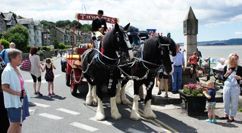 |
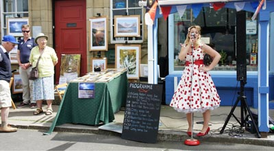 |
| Arnside Knott The limestone ridge of Arnside Knott, overlooking the village, is a little over 500 feet. This is not high when compared to the fells of the Lake District and Cumbria but the views from the summit over Morecambe Bay and beyond are some of the best in the region especially at sunset. From early Spring until late Autumn the lower slopes are carpeted in wild flowers and bracken providing a home for a wide variety of insect life including several rare species of butterflies. |
Arnside Tower Standing close to Arnside Knott, Arnside Tower is an example of a Cumbrian Pele Tower said to have been built between the late 14th C and early 15th C as a defence against Scottish raiding parties. From here, signals to warn of raids could be sent to the neighbouring towers of Hazelslack, Borwick, Beetham, Levens, Sizergh and across the estuary to Allithwaite. Large sections are still standing but visitors are warned not to enter the ruins due to danger from falling masonry. |
| Trowbarrow Quarry Nature Reserve Trowbarrow is a disused limestone quarry with rock faces around 30 metres high in places. It's a Site of Special Scientific Interest and a Local Nature Reserve featuring fossil beds, rock formations, rare plants and wildlife. Access can be arranged for disabled visitors by contacting the AONB on 01524 761034. A footpath links Trowbarrow to Gait Barrow, Hawes Water and Eaves Wood. |
Lakeland Wildlife Oasis One of the Lake District and Cumbria’s all weather attractions three miles from Arnside. It's a small zoo administered by the Lakeland Trust for Natural Sciences exhibiting some of the world's most threatened species. Take a walk through tropical halls where birds and butterflies fly free. Meet the meerkats, lemurs and monkeys. Open 7 days a week from 10am until 5pm. (last entry at 4pm) www.wildlifeoasis.co.uk |
| Levens Hall A fine Elizabethan House and beautiful gardens full of historical interest. It's open to the public from early April until mid-October. Children under the age of sixteen can visit free providing they are supervised by an adult. Visit the website for information about the children's playground, the Willow Maze, the Royal Trail and traction engine displays. Situated on the A6 five miles from Arnside. www.levenshall.co.uk |
Hazelslack Tower Built during the late 14th C, Hazelslack Tower stands on private land close to the village of Storth on the B5282. It can be seen from both the road and the footpath running alongside and is a landmark on the Limestone Link Walk between Arnside and Kirkby Lonsdale. |
| Gait Barrow National Nature Reserve Gait Barrow is linked by footpaths from both Silverdale and Arnside and stands on the Lancashire Cycleway Route 90. It's the only national nature reserve in the area. Several hundred species of moth have been recorded here and it is also of particular importance as a bird and butterfly habitat. Spring and summer are the best times for flowering plants and butterflies but woodland birds can be seen all year round. Although the nature paths and public footpaths are open at all times, there are areas of Gait Barrow which, due to the sensitivity of the site require a permit to visit. There are no toilets or refreshments on the site. www.arnsidesilverdaleaonb.org.uk |
|
Eaves Wood |
Jack Scout Jack Scout, with it's giant limestone seat, is another viewing point for wonderful estuary views especially at sunset and for sight of the Arnside Bore. It's a breeding ground for song-birds and a feeding place for migrant birds. |
| The Fairy Steps Naturally formed limestone steps on a walking route between Silverdale and the village of Beetham. The steps rise through a narrow gap between two rock faces. Visitors can test the legend which says that if a person is able climb or descend the steps without touching the sides, they can ask the fairies to grant a wish. |
Silverdale Golf Club The club is a visitor friendly 18 hole course close to Silverdale railway station. Established more than one hundred years ago it is one of the most scenic in the region. Open daily from 9am until 5pm. www.silverdalegolfclub.co.uk |
| Sea Fishing There are several easily accessible points along Arnside Pier and a few hundred yards beyond at New Barns Bay. For even more convenience, travel the two miles to Sandside where it is possible to fish from the roadside and even from the comfort of your car at high tide. |
Birds, Butterflies and Wild Flowers For information and images of the different species which can be seen in the Arnside and Silverdale Area of Outstanding Natural Beauty. www.lancashirewildlife.org.uk/leaflets/discoverarnside.pdf |
Arnside Sailing Club |
Place your Arnside and Silverdale Attraction here |
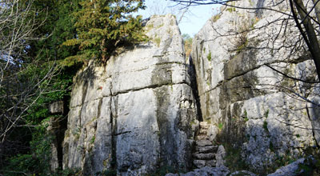 |
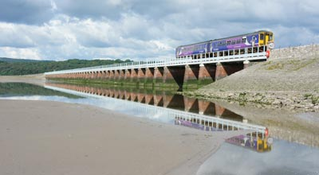 |
Walking and Cycling around Arnside and Silverdale |
|
There are plenty of paths and tracks offering a bit of everything for all ages and abilities around Silverdale and Arnside. There's a mix of shoreline, woodland, open countryside, some modest ascents and most are dog friendly. Examples of the short distance walks are the Silverdale Round; Silverdale to Arnside via Arnside Knott or the shoreline route via Blackstone Point and Silverdale to Hawes Water and Jenny Brown's Point. For details of more go to www.arnsidesilverdaleaonb.org.uk A popular walk is the Arnside Butterfly Walk. For information about this and a selection of Easy Access Walks including those suitable for wheelchair users, those with walking difficulties and people with young children and pushchair users, go to: www.arnside-aonb-easy-walks.pdf The Cross Bay Walks
Cross Bay Half Marathon Challenge |
|
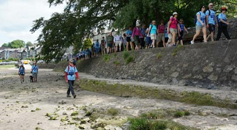 |
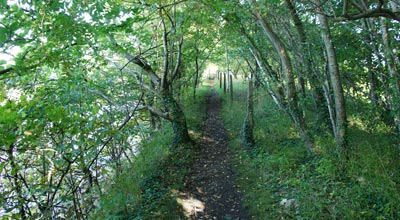 |
Arnside and Silverdale Cycling Routes and Courses |
|
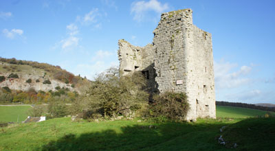 |
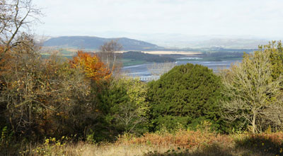 |
Arnside and Silverdale Food and Drink |
|
| Arnside Chip Shop Opening Times: Monday - Closed Tuesday to Thursday - 11.30am – 1.45pm and 4.30pm – 7.30pm Friday - 11.30am – 2pm and 4.30pm – 8.00pm Saturday - 11.30am – 8.00pm Sunday - 12 Noon – 7.00pm. www.arnsidechipshop.co.uk 1, The Promenade, Arnside LA5 0HF Phone: 01524 761874 Aluminium Recycling - Guide Dogs for the Blind |
The Heron Cafe Full breakfast Homemade soups, scones and cakes Salad platters Hot toasted melts Sandwiches Traditional style cosy tea room with outdoor seating and estuary views. Closed Tuesdays and Wednesdays. 3, The Promenade, Arnside LA5 0HF Phone: 01524 762482. |
| Ye Olde Fighting Cock Pub & Restaurant This building dating back to 1660 is in part possibly the oldest in Arnside. Freshly prepared food, daily specials, traditional Sunday lunches and children's menu. The Promenade, Arnside Phone: 01524 761203 |
Cinnamon Indian Restaurant & Takeaway Open seven days a week from 5.30pm – 11pm. Please note that cash payments only accepted. An ATM service is available in the restaurant. 16a Emesgate Lane, Silverdale Phone: 01524 702117 |
| Albion Pub & Restaurant Occupies a waterfront position with fine estuary views from the spacious outdoor seating area. Food available seven days a week from midday till 9pm except Christmas Day. www.albionarnside.co.uk |
Silverdale Hotel Situated a few minutes walk from the shoreline. Freshly prepared locally sourced food and a large selection of ales and wines. www.thesilverdalehotel.co.uk |
| Ship Inn Situated in Sandside, two miles from Arnside, the Ship Inn is managed by Ray and Lyn and provides freshly prepared home cooked meals and a selection of real ales. Daily specials and traditional roast dinner every Sunday. Plenty of parking and outdoor seating with estuary views. Food served Monday to Saturday from midday until 2.30pm and 5.30pm till 8.30pm and on Sundays from midday until 6pm. Sandside, Milnthorpe, Cumbria LA7 7HW Phone: 015395 63113. |
Wolf House Gallery Food served all day from 10am until 5pm. The café is in a former dairy offering a selection of freshly prepared snacks, soups, sandwiches, home baked scones and cakes. Outside seating for sunny days and a children's play area. Wolf House is a mile outside the village on Lindeth Road and close to Jenny Brown's Point. Phone 01524 702024 |
| Silverdale Village Tearoom Breakfast menu, home cooked meals, hot pies, cakes, sandwiches, hot takeaways, tea, coffee and soft drinks. |
RSPB Leighton Moss Award winning tea room open daily in the RSPB Centre. Home cooked meals, sandwiches, snacks and hot or cold drinks. A “Fledgling” menu is available for small appetites. Phone: 01524 701601 |
The Bake House Cafe & Pizzeria |
Ramblers Cafe & Takeaway Homemade scones, cakes, sandwiches, afternoon teas, a choice of coffee flavours and an extensive takeaway menu. Promenade position. 33 The Promenade, Arnside LA5 0HA |
| Kingfisher Restaurant Situated in Sandside, two miles from Arnside on the road to Milnthorpe. Open Wednesday to Sunday for both lunch and dinner. Lunch served from noon till 1.45pm and dinner from 5.45pm till 8.30pm. Ample parking and estuary views. www.kingfishersandside.co.uk |
Woodlands Hotel Pub |